| file | row_number | col_number | missing_number | rows_with_missing_values |
|---|---|---|---|---|
| health | 3195 | 690 | 1026776 | 3194 |
| cases | 3193 | 1269 | 0 | 0 |
| deaths | 3193 | 1269 | 0 | 0 |
| edu | 3285 | 55 | 1587 | 163 |
| pop | 3283 | 53 | 4011 | 155 |
| pov | 3195 | 34 | 19105 | 3195 |
| ump | 3277 | 100 | 1236 | 149 |
COVID-19 cases and deaths analysis
Research question
The COVID-19 crisis has wreaked havoc on the world economy and people’s lives. In the US, the impact has been staggering, with nearly 100 million people contracting the virus and over 1 million died as of mid-July, 2023, as reported by USAfacts. From cities to rural towns, it is important for policymakers to stay informed how COVID-19 is spreading and affects families, commerce, and travel to take measures. Our focus on this project is on scrutinizing COVID-19 data at the county level in the US from July 2020 to June 2021—a period marked by the peak severity of the pandemic and the coexistence of various policies. With the project, we aim to gain an understanding of how different factors played a role during the pandemic.
First, our focus revolves around understanding the dynamics of the pandemic’s progression within the US. It is crucial to delve into the data and find out whether there are tangible variations in the trends at some critical moments. For instance, we want to see if there is a dramatic difference in the confirmed cases or deaths in different regions and how these numbers evolve as time goes by.
Furthermore, recognizing that the counties are different in various manners, our analysis seeks to uncover patterns of COVID cases and deaths that may be influenced by these differences. Our investigation extends to labeling the counties using the available characteristics. This could be done by using clustering techniques, such that counties with similar characteristics could be categorized into a group and others with disparate characteristics could be categorized into separate groups. By targeting specific cluster groups, policy makers are able to make better informed decisions to contain the spread of the virus or reduce the death rates.
Lastly, this project also incorporates a nationwide exploration of the covariates that contribute to severity of deaths caused by COVID. We consider a pool of health-related factors, including smoking, drinking, obesity, food and environment, and insurance coverage to study their effects. Our chosen methodology involves utilizing regression trees to unravel the inter-relationship with the tree structure for each cluster. This approach also provides a measure of the importance for the factors in COVID caused deaths.
Data sets descriptions
To ensure the reliability of our findings, our initial step involves selecting the necessary data for accurate and comprehensive information. The most important information we is the daily cumulative number of cases and deaths across the counties, which are the target variables of our interest. Additionally, health, demographic and social-economic data are also necessary for us to discern their relationship with the COVID deaths rates. For example, people from poor regions may not have support from health insurance, which could become a serious problem if he catches the virus and his condition deteriorates. Given that most of the chosen datasets are very large and contains information not practical for our case study, we focus exclusively on a handful of variables that are directly relevant to our research objectives. Some downloaded files are .xsl and converted .csv. Below are the descriptions of the data sources and variables.
Data sources
1.Health data: The file analytic_data2021 comes from the County Health Rankings & Roadmaps (CHR&R). County Health Rankings & Roadmaps (CHR&R) is a program of the University of Wisconsin Population Health Institute. The CHR&R program provides data, evidence, guidance, and examples to build awareness of the multiple factors that influence health and support leaders in growing community power to improve health equity.
This file provides various health-related indicators for U.S. counties in 2021, including health behaviors, clinical care, as well as social and economic factors. Our focus is on ten specific variables—Adult smoking, Adult obesity, Food environment index, Physical inactivity, Excessive drinking, Uninsured, Percentage of people below 18 or above 65, rural rates, and homicide. We aim to investigate the correlation between these health metrics and COVID-19 death rates, seeking insights into the interplay between various factors and the pandemic’s impact on communities.
2.COVID data: The files covid_confirmed_usafacts and covid_deaths_usafacts come from USAFacts. USAFacts currently counts presumptive positive cases as confirmed cases, as this is in line with how the CDC reports data. For deaths, USAFacts only takes those from state and local agencies if the virus played a direct role in causing death.
These two files provide daily cumulative data on confirmed cases and deaths attributed to the pandemic, organized by county in the United States spanning from January 2020 to July 2023. Notably, there are some cases counted at the state level are not allocated to counties due to lack of information. We select the number at the end of each month as monthly data to make it more intuitive and representative. The COVID confirmed cases number and COVID death number are the target variables of our analysis.
3.Social-economic and demographic data: These four files Education, PopulationEstimates, PovertyEstimates and Unemployment, come from USDA’s & Economic Research Service, which anticipate trends and emerging issues in agriculture, food, the environment, and rural America and to conduct high-quality, objective economic research to inform and enhance public and private decision making.
The Education dataset comes from multiple programs, including US Census Bureau and American Community Service. This file provides the basic information on the educational attainment of counties in the United States from 2017 to 2021. We focus on the variable, number of people having bachelor’s degree or above, in this dataset.
PopulationEstimates are from U.S. Census Bureau for 1990, 2000, 2010, and 2020 Censuses of Population, and Population Estimates Program (PEP). We select population and total number of deaths for analysis.
PovertyEstimates are model-based estimates from the U.S. Census Bureau’s Small Area Income and Poverty Estimate (SAIPE) program. For counties and states, the program models income and poverty estimates by combining survey data with population estimates and administrative records. The data file file includes the estimated statistics of counties in the United States in 2021. The number of people of all ages in poverty 2021 and median income are selected for analysis.
The county and State unemployment rates are from the Bureau of Labor Statistics (BLS) Local Area Unemployment Statistics (LAUS) program. The Local Area Unemployment Statistics (LAUS) program is a federal-state cooperative effort in which monthly estimates of total employment and unemployment are prepared for over 7,600 areas. This file includes overall employment status by county in the United States from 2000 to 2022. Median household is from the U.S. Census Bureau’s Small Area Income and Poverty Estimate (SAIPE) program as in the previous dataset. The number of unemployed for each county is selected for this study.
Basic information about the data files
Description of variables
Below is the description of variables that are used in the project. For other variables, we refer interested readers to the data sources.
countyFIPS: Federal Information Processing Standard (FIPS) Code.
State: State abbreviation.
County Name: county names.
cases_mon: containing cumulative COVID-19 confirmed cases number at the end of each month from July 2020 to June 2021.
deaths_mon: containing cumulative COVID-19 death number at the end of each month from July 2020 to June 2021.
Smoking: Percentage of adults who are current smokers (age-adjusted).
Obesity: Percentage of the adult population (age 20 and older) that reports a body mass index (BMI) greater than or equal to 30 kg/m2.
Food environment index: Index of factors that contribute to a healthy food environment, from 0 (worst) to 10 (best).
Physical inactivity: Percentage of adults age 20 and over reporting no leisure-time physical activity.
Drinking: Percentage of adults reporting binge or heavy drinking (age-adjusted).
Uninsured: Percentage of population under age 65 without health insurance.
Homicide: Number of deaths due to homicide per 100,000 population.
Rural: Percentage of population living in a rural area.
Below 18: Percentage of population below 18 years of age.
Above 65: Percentage of population ages 65 and older.
Poverty: Percentage of estimated number of people of all ages in poverty 2021.
Unemployed: Percentage of unemployment in 2021.
Population: 4/1/2020 resident Census 2020 population.
Median Income: Estimate of median household income in 2021.
Total Deaths: Percentage of death number in period 7/1/2020 to 6/30/2021.
Higher Education: Percentage of adults with a bachelor’s degree or higher, 2017-21.
Data analysis
After obtaining the data, we analyze them from several aspects. Firstly, we present the overall graphical representations of the data, qualitatively discussing the trends (in months) in the COVID infection cases and deaths from a state level. Secondly, we conduct time series analysis on the national total cases and deaths, examining whether there are temporal correlations. We then fit an ARIMA model to quantitatively analyze the trend of data over time. Subsequently, we employ the K-means clustering analysis method to cluster different countries based on social-economic and demographic factors. Finally, we use the regression tree method to analyse the impact of health-related variables on the death rate.
The visual representations below shows a persistent increase in the overall count of COVID-19 infection cases and associated deaths, characterized by an S-shaped curve. Notably, these two numbers are marked by a slow and steady increase in the period from July 2020 and October 2020. During the winter months (November 2020 to January 2021), a dramatic surge is evident across all states, contributing to a substantial spike in both new cases and deaths. In subsequent months (Feburary 2021 to June 2021), the new cases and deaths slow down to the initial level. Nevertheless, there appears to be a small peak in March and April 2021, when the delta variant becomes prevalent in the states.
Geographically, the distribution of cases and deaths is more pronounced in densely populated, urbanized and prosperous regions, such as California, New York state, and Texas, while relatively fewer incidents are observed in rural and sparsely populated areas. The spatial imbalance motivates our exploration into the relationships between COVID-19 cases and deaths and various contributing factors by segmenting the different regions to better understand the dynamics on stage.
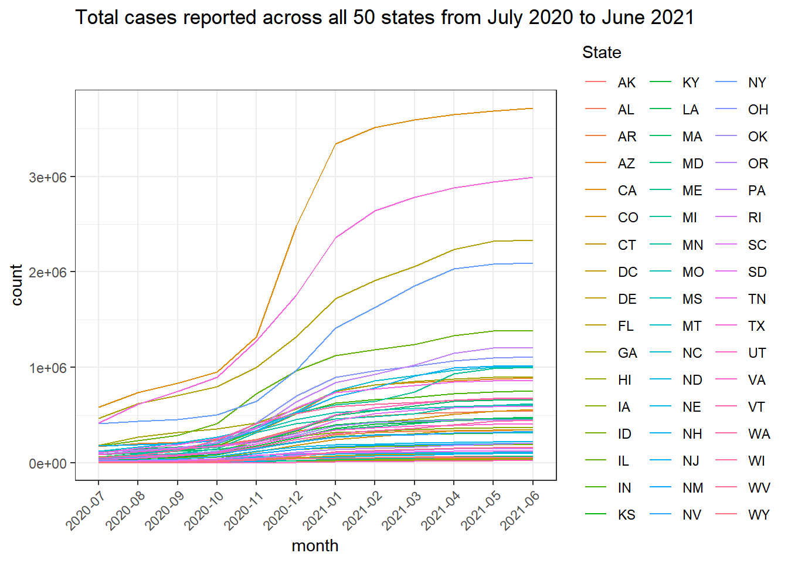
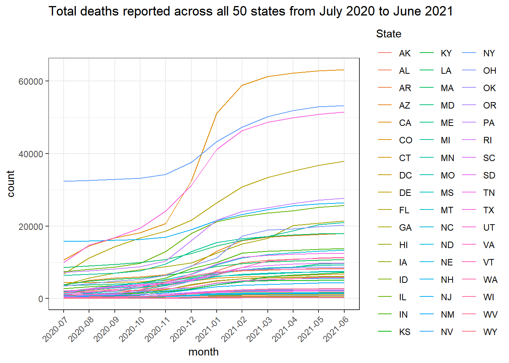
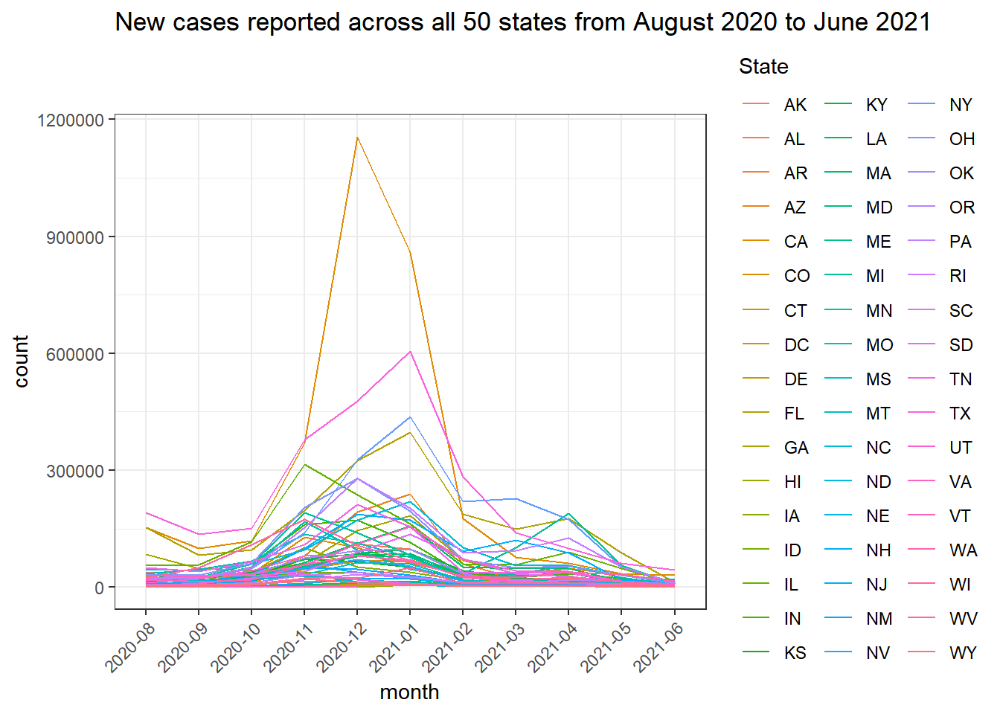
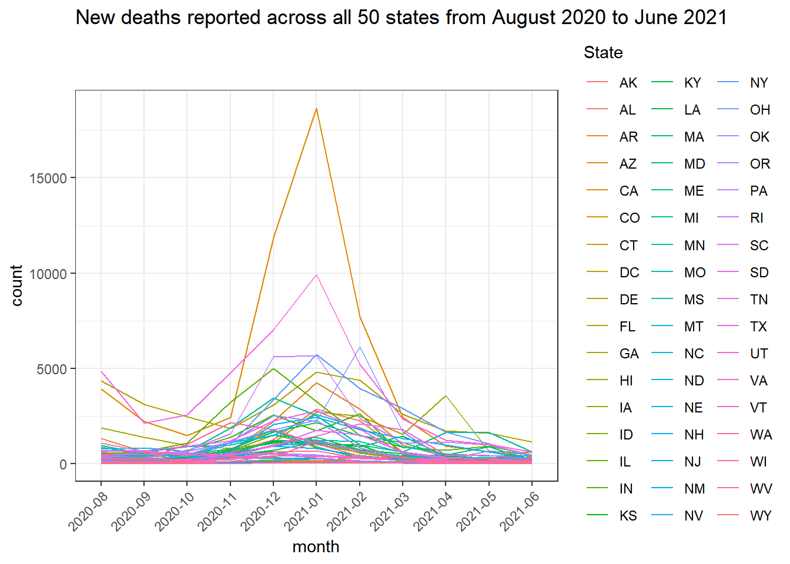
Time series analysis of national cases and deaths
Our focus now shifts to discerning specific trends in cases and deaths at the national level within the United States. For this, we examine daily cumulative data spanning from July 1, 2020, to June 30, 2021. We use the ARIMA model handle trend and seasonality and the resulting series is treated as stationary time series. The model is constructed with a combination of its lagged time series values (“AR”) and moving average of lagged forecast errors (“MA”). An ARIMA model is typically specified by a tuple (p, d, q), where p and q define the orders of AR and MA, and d specifies the order of differencing operation, in the form of \((1 - \sum_{i=1}^{p} \phi_{i} L^{i} ) \; (1-L)^{d} \; X_{t} = (1 + \sum_{i = 1}^{q} \theta_{i}L^{i}) \;\epsilon_{t}\).
The advantage of the ARIMA model is that the model is simple and only requires endogenous variables without the help of other exogenous variables. Nevertheless, ARIMA model also has disadvantages: the time series data is required to be stable, or be stable after differentiation. Essentially it can only capture linear relationships, not non-linear relationships. In order to test the accuracy of model fitting, we divide the data set into a training set and a test set. The initial 70% of the data (1-Jul-2020 - 11-Mar-2021) is used as the training set and the remaining 30% (12-Mar-2021 - 30-June-2021) is utilized as the test set.
National cases
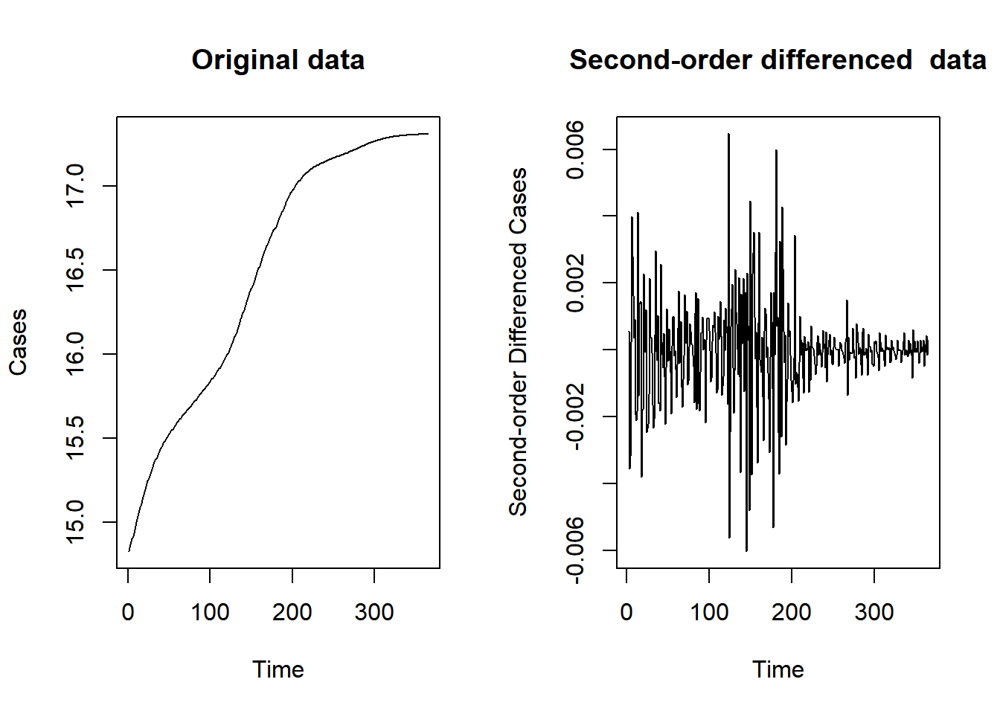
With an visual insepction, we find that the original data (after taking logarithm) is not stationary.The stability is achieved after second-order difference. By applying the ADF test on the second-order difference data, we find the test statistic is -6.7535216 with a lag order of 6, resulting in a p-value of 0.01. We thus reject the null hypothesis (under the 5% significance level), and the stationarity is supported for the second-order differenced series.
By minimizing AIC, the obtained ARIMA model is an ARIMA(2,2,2) with the estimated cofficients \(\phi_{1} = 1.1897, \phi_{2} = -0.7419, \theta_{1} = -1.4758 \; \text{and} \; \phi_{2} = 0.7469\). After inspecting the residuals, we find it tends to be a white noise, as there are few cases of significant autocorrelation despite its distribution slightly deviates from normal.
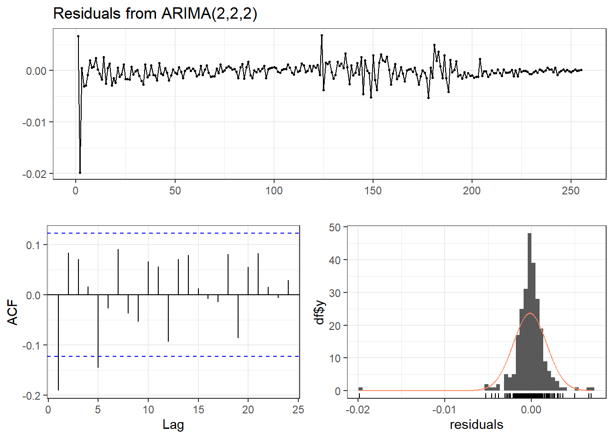
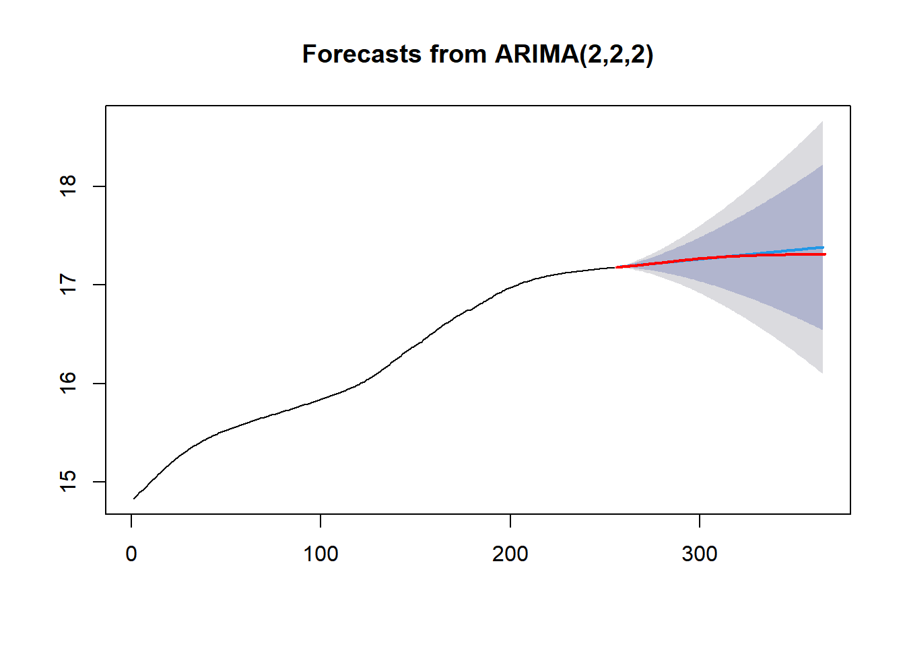
In the subsequent analysis, we assess the forecasting accuracy of the model in the period from the remaining 30% of the data. The actual data curve in red and fitted curve in blue, along with 80% and 95% confidence intervals are represented. The high predictability is also validated by the value of mean absolute percentage error of 0.0983973%, suggesting a high level of accuracy.
National deaths
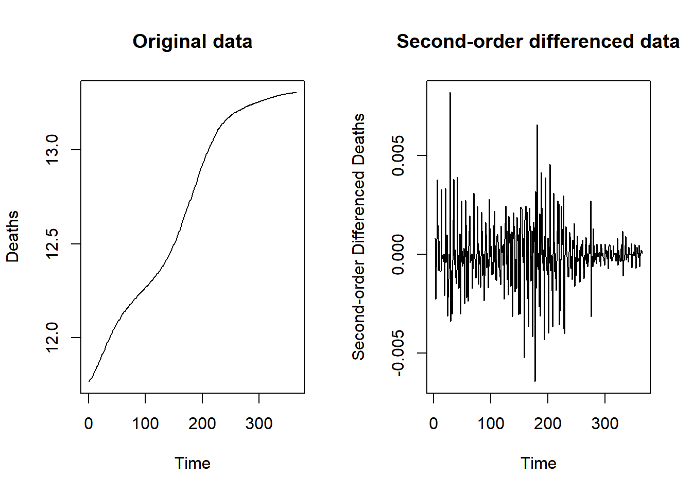
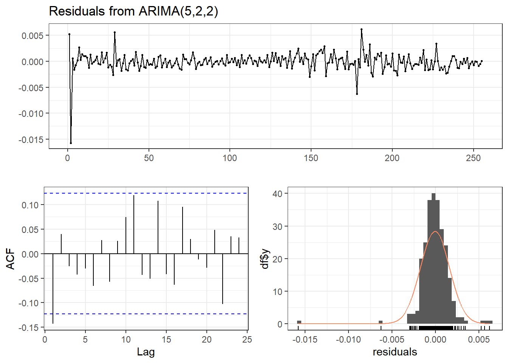
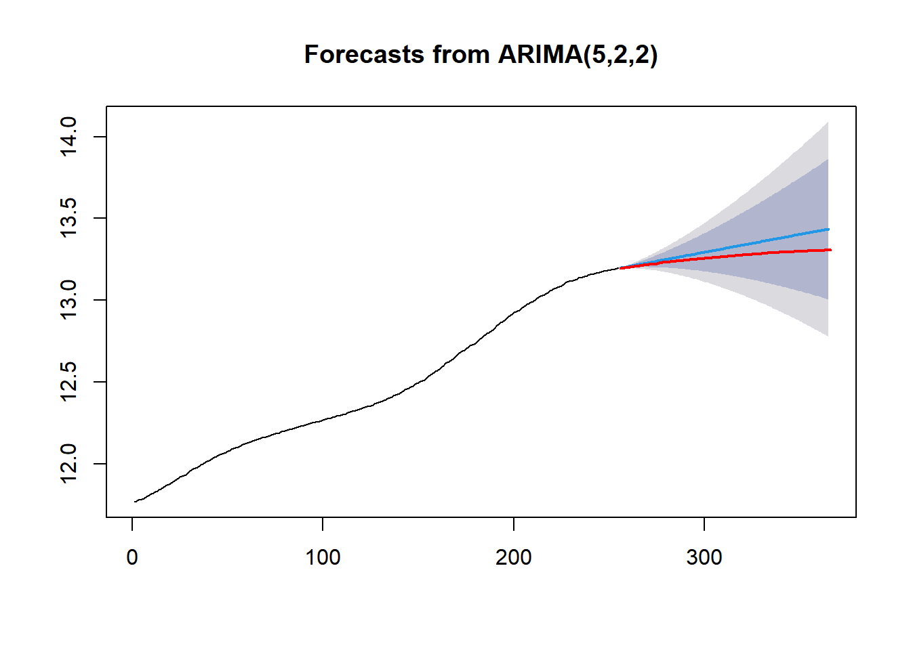
By performing similar analysis on the death numbers, we obtain an ARIMA(5,2,2) with estimated coefficients \(\phi_{1} = 0.3002, \phi_{2} = -0.5749, \phi_{5} = -0.3117, \phi_{4} = -0.2904, \phi_{5} = -0.3423, \theta_{1} = -0.9409, \theta_{2} = 0.5743\). Following the previous analysis, the residuals of the model also tend to be white noise. The MAPE for the model is 22.8784705%, indicating a moderate level of accuracy since the model tends to overestimate the number of deaths.
An inspection on covariates
We now leverage national county-level data to explicate the distribution characteristics of the factors associated with each county. In the context of health-related factors, certain variables exhibit normality, for example, smoking, drinking, obesity, and uninsurance, with skewness values proximate to 0 and kurtosis close to 3. In addition, physical inactivity is characterized by unskewness and thinner tails, suggesting low probabilities for cases of extrem low or high inactivity rates. The food environment index, in contrast, is more left-skewed and fatter tailed. This implies that quite a few counties have relatively unhealthy food environment.
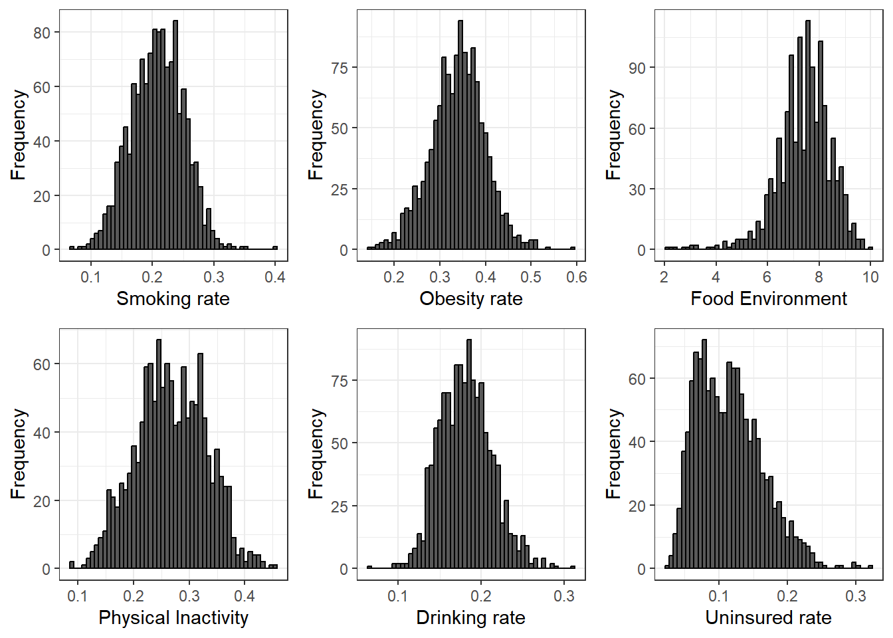
| Variable | Max | Min | Mean | Median | Variance | Skewness | Kurtosis |
|---|---|---|---|---|---|---|---|
| Smoking | 0.403 | 0.071 | 0.208 | 0.210 | 0.002 | 0.003 | 3.070 |
| Drinking | 0.310 | 0.065 | 0.182 | 0.181 | 0.001 | 0.302 | 3.281 |
| Obesity | 0.589 | 0.143 | 0.340 | 0.342 | 0.004 | -0.069 | 3.410 |
| Uninsured | 0.321 | 0.024 | 0.115 | 0.111 | 0.002 | 0.662 | 3.269 |
| Physical Inactivity | 0.454 | 0.089 | 0.268 | 0.265 | 0.004 | -0.002 | 2.577 |
| Food Environment | 10.000 | 2.100 | 7.420 | 7.500 | 1.063 | -0.908 | 5.522 |
For social-economic and demographic variables, all of them are right-skewed and most are characterized with fat tails, especially population, where there occurs to be a number of cities with large population. For the variable rural and total death rates, the kurtosis is low, suggesting there is a lack of extreme values and a more uniform-like distribution.
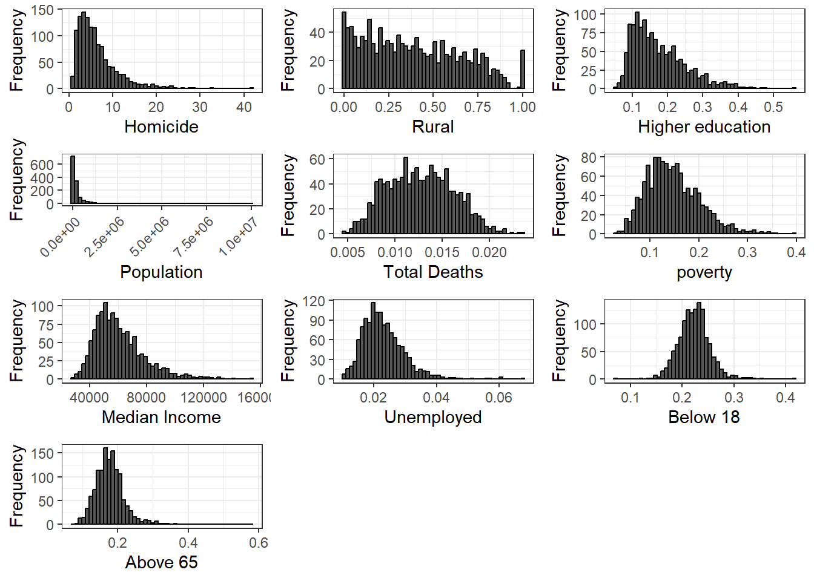
| Variable | Max | Min | Mean | Median | Variance | Skewness | Kurtosis |
|---|---|---|---|---|---|---|---|
| Homicide | 41.470 | 0.603 | 6.696 | 5.252 | 2.894500e+01 | 2.523 | 12.381 |
| Rural | 1.000 | 0.000 | 0.386 | 0.353 | 7.100000e-02 | 0.368 | 2.119 |
| Higher Education | 0.555 | 0.048 | 0.175 | 0.157 | 6.000000e-03 | 1.062 | 4.079 |
| Population | 10014009.000 | 5240.000 | 227283.353 | 83658.000 | 2.477919e+11 | 9.156 | 139.636 |
| Total Deaths | 0.023 | 0.005 | 0.013 | 0.013 | 0.000000e+00 | 0.146 | 2.404 |
| Poverty | 0.394 | 0.029 | 0.148 | 0.141 | 3.000000e-03 | 0.719 | 3.739 |
| Median Income | 153716.000 | 28236.000 | 61153.168 | 57608.000 | 3.158294e+08 | 1.218 | 5.063 |
| Unemployed | 0.067 | 0.010 | 0.023 | 0.022 | 0.000000e+00 | 1.374 | 7.446 |
| Below 18 | 0.417 | 0.071 | 0.223 | 0.223 | 1.000000e-03 | 0.379 | 5.475 |
| Above 65 | 0.582 | 0.075 | 0.178 | 0.175 | 2.000000e-03 | 1.580 | 11.345 |
Clustering analysis
We prepare our dataset for clustering analysis using the social-economic and demographic variables. The dataset is standardized to remove the effect of scales on the clustering. We evaluate the validity of clustering by assessing its clustering tendency because the most clustering methods are not discriminating, meaning that even though the data are random uniformly distributed, it could also find some clustering patterns inside the dataset. We employ the Hopkins statistic, a measure probability that the dataset is generated by a uniform distribution. The null hypothesis suggesting a uniform distribution should indicate the value being close to 0.5. With a Hopkins statistic value of 0.9999973, we reject the null hypothesis and conclude that the resulting dataset exhibits a high degree of clusterability.
Having established the dataset’s suitability for clustering analysis, the subsequent task is to determine the optimal number of clusters for partitioning. This step commonly revolves around optimizing a statistical criterion. An approach involves utilizing the within-cluster sum of squares (WSS), which measures the compactness of resulting clusters—a smaller WSS value indicates a more cohesive clustering. The following figure illustrates the variation in WSS with respect to the number of clusters. While the graph does not display a distinct elbow pattern, we deem it is reasonable to select 4 clusters as the WSS value does not exhibit a substantial decrease beyond this point.
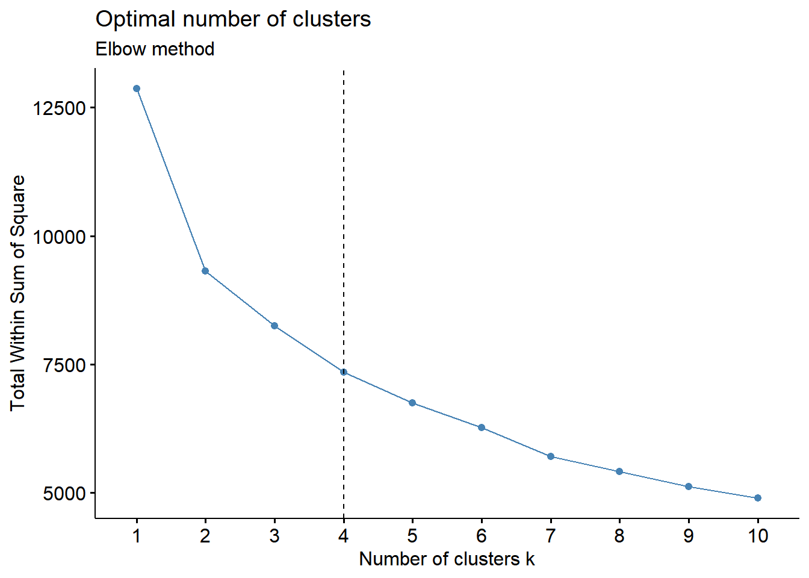
We implement k-means clustering with a predetermined value of 4 for better understanding the underlying patterns in the data. As the data contain more than two variables, we use principal component analysis (PCA) to reduce the dimensionality and provide a scatter plot. As depicted in the 2-D cluster plot, the first principal component accounts for 41.8% of the total variation, while the second component explains an additional 19.5%. The cluster plot below indicates the presence of 4 meaningful clusters within the dataset in spite of some overlap between the clusters (especially between cluster 2 and 4), while cluster 3 and 4 clearly separate from each other.
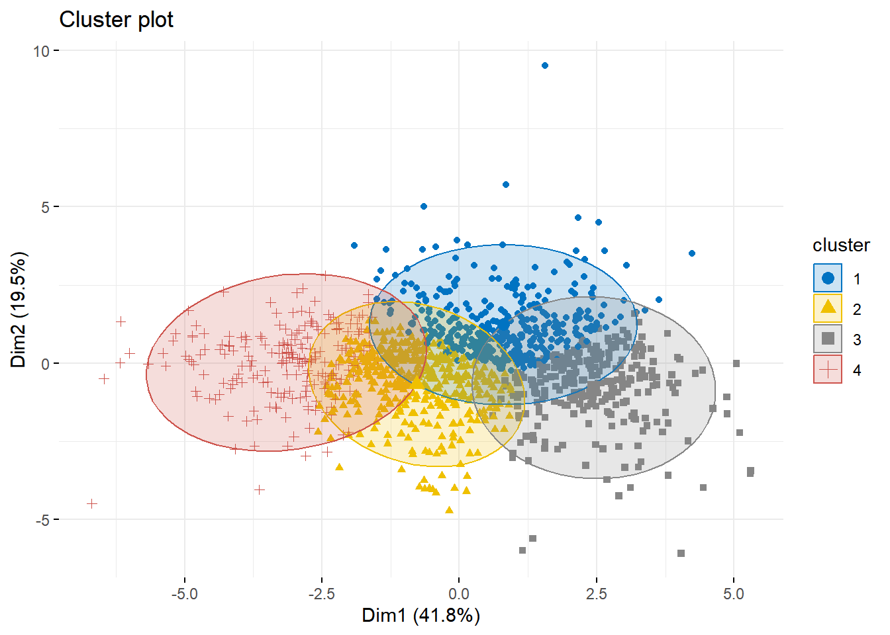
The dataset is partitioned into 4 clusters, with each containing 389, 406, 278, and 214 data points. We can therefore characterize the social-economic profiles of these clusters by examining the distribution of the variables within each cluster. Cluster 3, in particular, has the highest rates of homicide, rural living, poverty and total death. It also has the smallest population, lowest higher education rate and median income. It is then labeled as “Small rural towns with more poverty and less education”. In contrast, cluster 4 shows best results among the social-economic factors with highest higher education, median income, but least rates of homicide, rural living, total deaths and poverty. We thus give it the label “Big cities with more wealth and education”. Clusters 1 and 2 fall between Clusters 3 and 4 in various indicators. Cluster 2 outperforms Cluster 1 in higher education rate, lower total death rates, higher median income, and less poverty, despite a slightly higher homicide rate. We notice that the indicators for cluster 2 are similar to the national level, but with less homicide and being less rural. We provide it with the label “Medium-sized cities averaging to national level”. Finally, cluster 1 has education, population, poverty, and median income below national averages, along with a more rural profile and a higher percentage of elderly population (and less children/teenager percentage). Therefore, it is labeled as “rural areas with higher elder population”. We do not leverage unemployment as a discriminitive factor as it converges around the national level rate across all clusters, even though it tends to be higher in bigger cities.
| Cluster 1 | Cluster 2 | Cluster 3 | Cluster 4 | National | |
| Homicide | 5.0424 | 5.7128 | 12.8791 | 3.5366 | 6.6963 |
| Rural | 0.5175 | 0.2512 | 0.6042 | 0.1165 | 0.3855 |
| Higher Education | 0.1568 | 0.1763 | 0.1077 | 0.2937 | 0.1751 |
| Population | 89988 | 216115 | 43016 | 737417 | 227283 |
| Total Deaths | 0.0147 | 0.0107 | 0.0161 | 0.0084 | 0.0127 |
| Poverty | 0.1419 | 0.133 | 0.2197 | 0.0922 | 0.1476 |
| Median Income | 55994.2956 | 63547.6133 | 43194.9209 | 89316.9486 | 61153.1678 |
| Unemployed | 0.0214 | 0.0234 | 0.0232 | 0.0245 | 0.0229 |
| Below 18 | 0.2019 | 0.2383 | 0.2326 | 0.2202 | 0.223 |
| Above 65 | 0.217 | 0.1525 | 0.1806 | 0.1546 | 0.1784 |
Regression trees
After obtaining the four clusters, we are able to analyse the relevant health factors (namely, smoke, obesity, food environment, physical inactivity, drinking and uninsurance rate) that potentially influence the COVID-19 death rate. To explore these relationships, we employ regression trees with the classification and regression trees (CART) algorithm. The generated trees offer an easily interpretable framework for discerning a county’s death rate. Starting from the root node that contains all data points, the algorithm sequentially partitions the data based on specific variable values. Each data point is then assigned to a new node through binary division. This process iterates until the stopping criterion is met. However, it is common for trees to become overly complicated such that their interpretability and prediction accuracy. To address this, we implement pre-pruning by controlling the complexity parameter such that a good balance between model simplicity and generality can be ensured. This is done by 5-fold cross validation with grid search on the hyper-parameter and in doing so we choose the one with least resulting RSME.
The generated regression trees help us understand how relevant factors influence the COVID death rate for different kinds of cities. We start with the rural towns with higher elder population (Cluster 1). Beginning at the root node, we observe the mean COVID death rate at 2%, representing 100% of the total data points. Moving towards the first splitting rule, a physical inactivity rate less than 25% corresponds with the lowest death rate of 1.8%, which then encompasses 30% of the total data points. For cases where the physical inactivity rate is larger than or equal to 25%, a new set of splits emerge. Continuing the “if-then” structure, the uninsuarance rate exceeding 19% results in death rate of 2.8%. Conversely, if it is below 19%, we then investigate into the county’s food environment index. Should this index be above 6, the predicted death rate is 2.1%. Conversely, an food environment index less than 6 leads to a highest death rate of 3.3%, which occupies the smallest portion of data among all terminal nodes.
Similar “if-then” rules could be applied on the rest of the trees, where the primary split is usually physical inactivity. Significantly different tree structure appears to belong to small rural towns with more poverty and less education (Cluster 3), where the first determining factor becomes smoking rate. Drinking also plays an important role as it appears several times in deeper layers of the tree.
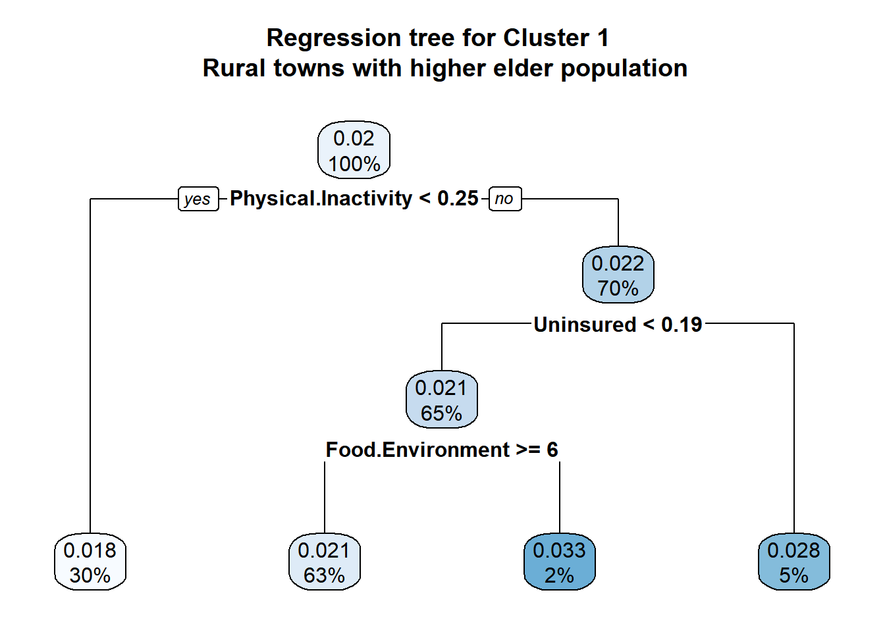
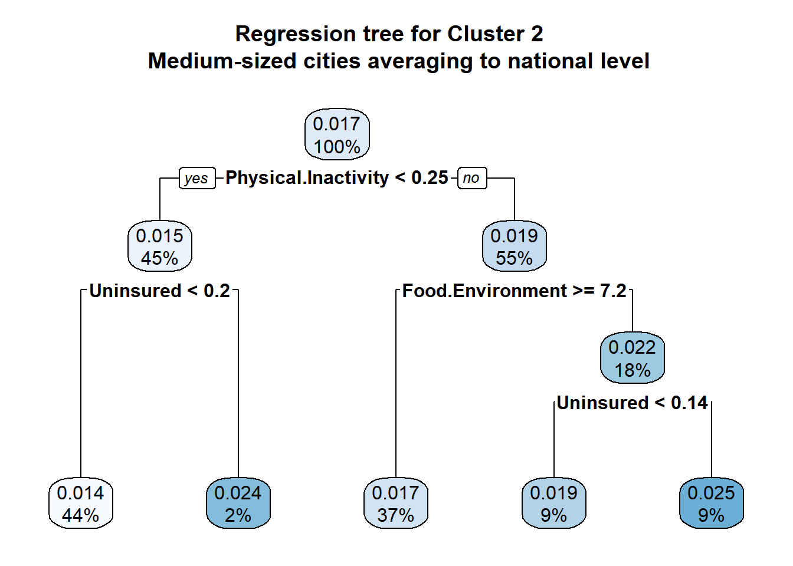
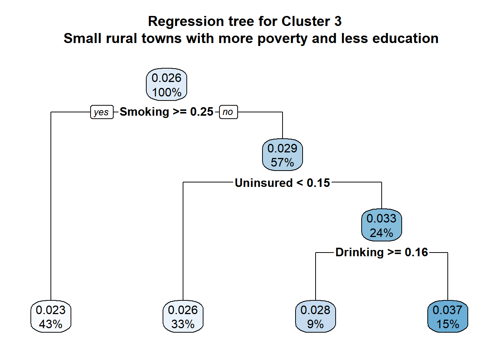
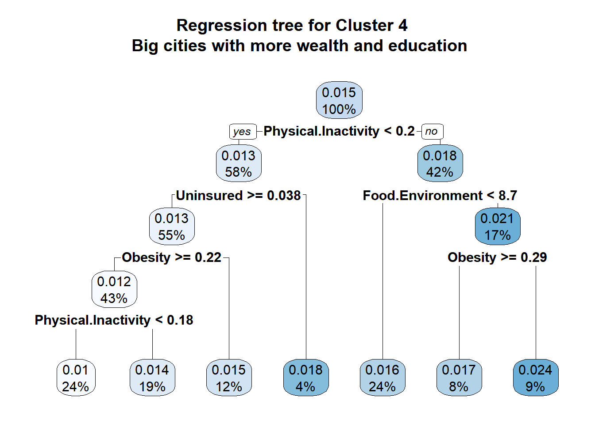
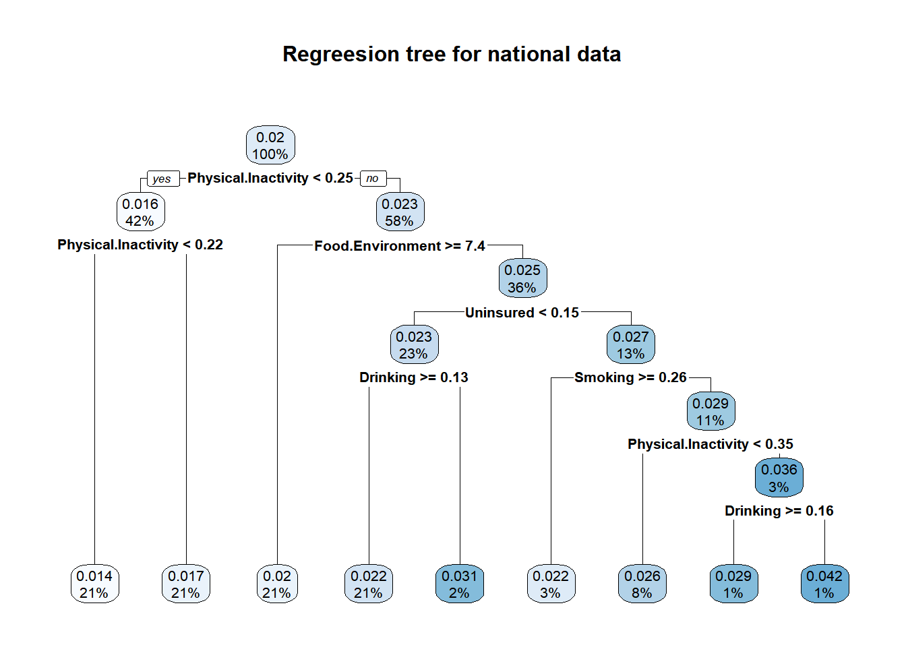
The trees also provide metrics to measure the importance of the variables in its construction. It is calculated by the improvement in the purity that each variable contributes, which, as a result, may be different from the order in which they appear in the tree. Below are the figures of the (scaled) variable importance for the full data and each cluster. As can be seen, for most clusters, the primarily important variable is physical inactivity, followed by uninsuarnce and food and environment. However, for the rural areas with more poverty and less education, the most influential factor becomes uninsurane, and other important factors turn to be smoking, drinking, etc. Conversely, in big cities with more wealth and education, obesity takes the second place in the measurment of variable importance. It is, however, interesting to notice that uninsuarce is ranked not so important on a national level, which could be imputed to the instability of individual trees.
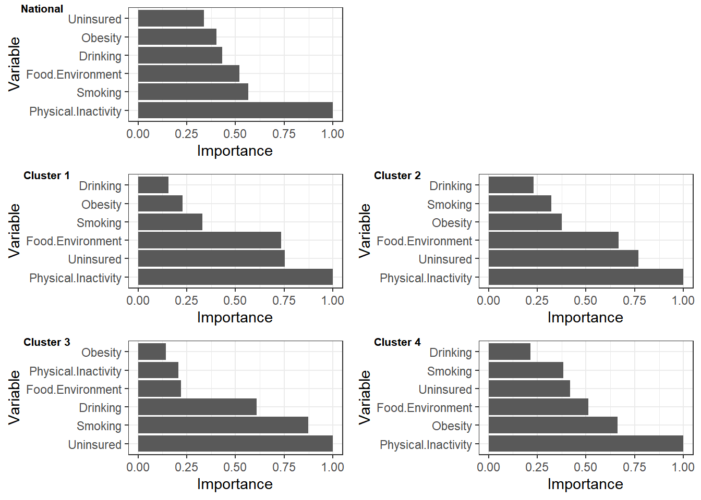
Conclusion
This report delves into the dynamics of COVID-19 infections and deaths across U.S. counties between July 2020 and June 2021. We conduct both qualitative and time series analyses to gain insights into the overall COVID cases and deaths. In our findings, there exists large difference in different states in the size of the increase of cases and deaths but similar progressing pattern is observed across the states. Also, leveraging ARIMA enables us to model the moving dynamics and make accurate predictions, particularly in the COVID cases.
Adopting a two-stage methodology inspired by de Ona et al. (2016), we initiate our analysis by clustering counties through K-means clustering based on their socioeconomic and demographic profiles, from which we are able to identify four distinct clusters. Subsequently, we construct regression trees for each cluster to examine the relationship between death rates and health-related factors. The finding underlines the significance of physical inactivity and lack of insurance, although exceptions are noted in rural areas with high poverty and low education, where factors such as lack of insurance, and excessive drinking and heavy smoking are deemed crucial. These insights are valuable to policymakers and health workers to help make better informed decisions in containing virus spread and reduce COVID caused deaths.
However, given the amount of missing values in the data and unavailability of direct use of these entries, our analysis is conducted on the basis of 1287 counties out of 3193. We acknowledge that there could exist undiscovered patterns if we had access to those values and this also has effect on the construction of the regression trees. Secondly, the determination of the number of clusters in our analysis is based on the elbow rule. However, this method has limitations, especially given the turning point is not exactly clear in our case study. Alternative evaluation metrics, such as information criteria and Jaccard coefficient, could be used to make a more comprehensive approach to optimize the clusters. Thirdly, we have to point that the trees are not stable – a small variation in the data could result in a different tree, which impacts the determination of the important variables. Alternative ensemble and boosting methods could be utilized to enhance the accuracy and stability but at the cost of the losing easy interpretability of trees.
References
de Ona, J., de Ona, R., Lopez, G. (2016). Transit service quality analysis using cluster analysis and decision trees: a step forward to personalized marketing in public transportation. Transportation, 43:725–747.
Annex
Links
Github: https://github.com/wuyuntong/Group_Project
Data Source:
Health data (2021 CHR CSV Analytic Data): https://www.countyhealthrankings.org/explore-health-rankings/rankings-data-documentation
COVID data (cases & deaths): https://usafacts.org/visualizations/coronavirus-covid-19-spread-map/
Social-economic data (poverty, unemployment, education, & population): https://www.ers.usda.gov/data-products/county-level-data-sets/county-level-data-sets-download-data/
Details on data pre-processing
For COVID cases and deaths datasets, we formatted the county FIPS code such that it is a 5-digit string. The FIPS for statewide unallocated cases and deathes is assigned a new value “99999”. Variables important to the study(countyFIPS, County Name, State, StateFIPS and the numbers at the end of each month from Jul 2020 to June 2021) are reserved. After that, the case and death numbers are renamed corresponding to each month. A new row for US representing the nationwide cases and deaths is added.
For social-economic and demographic datasets, we keep only the countyFIPS and variables mentioned in the section of variable description. For health dataset, we merged county FIPS and state FIPS such that the FIPS code is in line with other datasets. The variables for study are selected and are changed from the string type to numeric. Almost all the columns are complete, with no missing values.
We extracted the the required variables as mentioned in the previous section. For each one of cases and deaths, we join them by the primary key countyFIPS with the rest of the pre-processed datasets. Missing values are deleted. The resulting final ones are cases_f and deaths_f with 1287 observations. These two datasets are used for clustering and regression tasks.